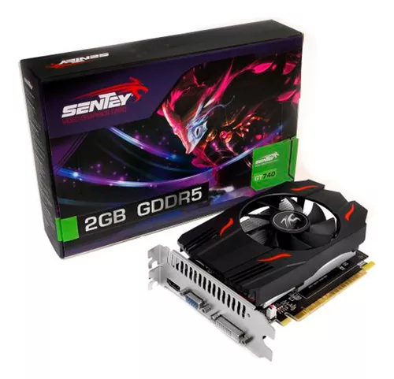
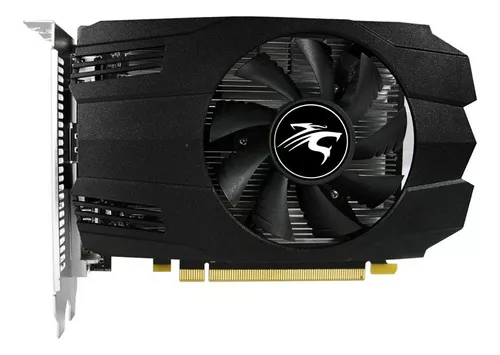

Refrigeración Líquida Cooler Master Masterliquid 240l Core MLW-D24M-A17PK-R1 240mm Led Negro para Intel y AMD
VENTILADORES DE 120 MM:
El ventilador mejorado de 120 mm ofrece un rendimiento óptimo del radiador.
SUPERFICIE AMPLIADA DEL RADIADOR:
La superficie ampliada de las aletas del radiador acelera la disipación del calor para una refrigeración superior.
BOMBA DE DOBLE CÁMARA GEN S:
La base de cobre rediseñada apunta a los puntos calientes con precisión junto con un mayor flujo de agua y presión para mejorar el rendimiento de enfriamiento.
PASTA TERMICA CRYOFUZE:
Incluye pasta térmica CryoFuze premium para una conductividad térmica excepcional.
DISEÑO CLÁSICO LIMPIO:
El diseño limpio y minimalista aporta un lavado de cara moderno y renovado a la tapa de la bomba.
Cpu Watercooling Redragon Effect X A-rgb Liquid Dual 120 Mm LED [Memórias RAM
Durabilidad avanzada:
El CCW 3000 posee tubos anti fuga que hacen
que este sistema todo-en-uno tenga un
mantenimiento prácticamente nulo.
El tubo maneja alta presión en calor extremo,
lo que se suma al proceso de enfriamiento.
Iluminación led RGB:
El Effect X incorpora un sistema de
iluminación LED RGB configurable,
o ARGB, que puedes personalizar a
tu preferencia para salir a la batalla
como a ti te gusta.
La más amplia compatibilidad:
Compatible con los sockets más populares y de mayor
circulación en el mercado. Desde los más modernos
hasta los viejos y fieles.
Ventiladores RGB:
Dos ventiladores RGB proporcionan suficiente
flujo de aire y presión para enfriar eficazmente
la temperatura con un nivel sonoro increíblemente
bajo en comparación a los sistemas de su tipo.
Cooler Master MasterLiquid Lite MLW-D24M-A18PC-R2 RGB
AVANCE, CALIDAD, RENDIMIENTO:
Nuevo diseño de bomba con componentes internos mejorados para una mayor resistencia al desgaste y un rendimiento más duradero. EPDM de grado industrial especialmente formulado utilizado para sellado reforzado para la prevención de fugas.
NUEVA BOMBA DE CÁMARA DOBLE DE TERCERA GENERACIÓN:
Experimente un rendimiento de enfriamiento más silencioso con un diseño mejorado en el impulsor interno y la carcasa para mejorar el rendimiento y la eficiencia de enfriamiento al reducir el nivel de ruido.
ÁS ÁREA, MÁS DISIPACIÓN:
Cuanto más área de superficie, mejor es la disipación de calor, con un aumento de más del 20% en el área de superficie del radiador para una mejor eficiencia de enfriamiento.
NUEVO SICKLEFLOW 120 RGB:
Nuevo SickleFlow 120 RGB con todas las aspas del ventilador Air Balance optimizadas, cojinete de rifle innovador y marco de ventilador más duradero para un rendimiento de enfriamiento más silencioso.
ILUMINACIÓN RGB COMPLETA:
Experimente la forma más colorida de enfriar con bombas y ventiladores listos para RGB que son compatibles con el software pero también certificados como compatibles con los principales fabricantes de placas base. o un rendimiento de enfriamiento más silencioso.
Deepcool AG620 R-AG620-BKANMN-G-1 - RGB
Procesador DeepCool AG620 ARGB de doble torre, 120 mm, negro Dimensiones del producto:
129 x 136 x 157 mm (largo x ancho x alto)
Dimensiones del disipador térmico:
127 x 110 x 157 mm (largo x ancho x alto)
Peso neto:
1300 g
Tubo de calor:
0,6 mm x6 piezas
Dimensiones del ventilador:
120x120x25 mm (LxWxH)
Velocidad del ventilador:
300-1850 RPM +/ -10%
Ruido del ventilador:
29,4 dB (A)
Voltaje nominal del LED:
5 VDC
COOLER GAMA MEDIA
Disipador Deepcool Ak400 Zero Dark Plus Lga1700/am5 1650rpm Led N/a
Este componente electrónico procesa la información que llega al dispositivo y los transforma en imágenes o videos para mostrarla visualmente. Es ideal para trabajar con aplicaciones gráficas ya que permite obtener imágenes más nítidas.
Este componente electrónico procesa la información que llega al dispositivo y los transforma en imágenes o videos para mostrarla visualmente. Es ideal para trabajar con aplicaciones gráficas ya que permite obtener imágenes más nítidas.
Placa De Video Msi Geforce Gtx 1650 D6 Ventus Xs Ocv1
Con una velocidad de memoria de 12000 MHz los datos del procesador central se van a traducir en información comprensible en tan solo un abrir y cerrar de ojos; decodificará tantos ciclos por segundo que hará más efectiva la transmisión de datos a otros componentes. Con esta cualidad, el equipo ganará agilidad y eficiencia. Velocidad en cada lectura Como cuenta con 896 núcleos, los cálculos para el procesamiento de gráficos se realizarán de forma simultánea logrando un resultado óptimo del trabajo de la placa. Esto le permitirá ejecutar lecturas dispersas y rápidas de y hacia la GPU.Calidad de imagen Criterio fundamental a la hora de elegir una placa de video, su resolución de 7680x4320 no te defraudará. La decodificación de los píxeles en tu pantalla te harán ver hasta los detalles más ínfimos en cada ilustración.
Placa De Video Gt740 2gb Geforce Sentey Ddr5 pcie pcreg

Placa De Video Geforce Nvidia Sentey Gtx 1050 4gb Gddr5 Dp Hdmi Dvi

Mejora tu experiencia de juego con la Placa de video Nvidia Sentey GeForce 10 Series GTX 1050 4GB OC Edition de 4GB. Esta potente tarjeta gráfica cuenta con 640 núcleos y una velocidad de memoria de 7000 MHz, lo que te permitirá disfrutar de tus juegos favoritos con gráficos de alta calidad y un rendimiento fluido. La compatibilidad con DirectX y OpenGL asegura que podrás jugar a los últimos títulos sin problemas. Con una resolución máxima de 7680x4320, esta placa de video te permitirá sumergirte en mundos virtuales increíblemente detallados y realistas. Además, gracias a su capacidad para conectar hasta 3 monitores, podrás disfrutar de una experiencia de juego más inmersiva y panorámica. La Placa de video Nvidia Sentey GeForce 10 Series GTX 1050 4GB OC Edition es fácil de instalar en tu PC, ya que cuenta con una interfaz PCI-Express 3.0 y un requerimiento energético de 100 W. Sus múltiples opciones de conectividad, como DisplayPort 1.4a, HDMI y DL-DVI-D, te permitirán conectarla a una amplia variedad de dispositivos y monitores.